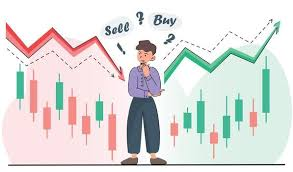

Welcome to the World of Stock Market

The stock market is one of the most important financial systems in the world. It provides a platform where investors can buy and sell shares of publicly listed companies. Companies use the stock market to raise funds for business expansion, while investors use it as an opportunity to grow their wealth over time. Every day, millions of people participate in stock market trading through different exchanges and online trading platforms.The stock market plays a major role in economic growth because it connects businesses with investors. When companies receive investments, they can expand operations, create jobs, improve products, and increase profits. Investors benefit when the value of their shares increases or when companies distribute profits as dividends. Understanding the stock market is important for anyone interested in finance, business, or investment opportunities.Technology has made stock market investing easier than ever before. Today, people can trade stocks using mobile applications and websites from anywhere in the world. Beginners can start with small investments and gradually learn market strategies, risk management, and portfolio building. A well-planned investment strategy can help individuals achieve financial goals and long-term stability.
Why Learn Stock Market?
Understanding the stock market can help people improve financial knowledge and create future investment opportunities. It teaches concepts like risk management, long-term planning, and wealth creation. Even beginners can start learning step by step and become confident investors.